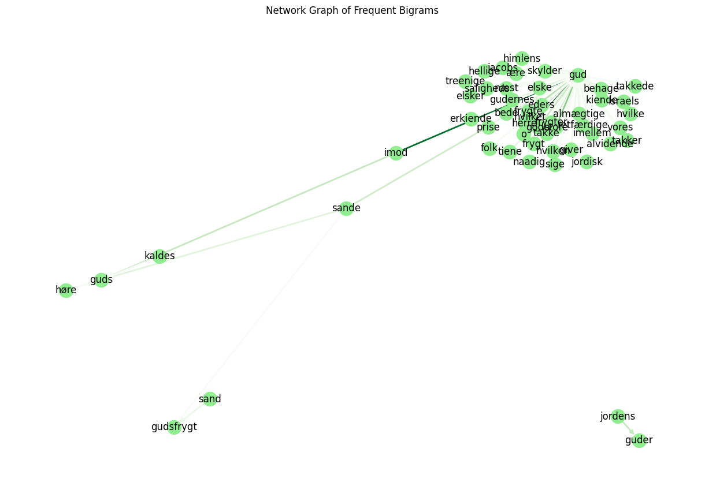

Bigram Analysis of Trykkefrihedens Skrifter#
This notebook performs bigram (word pair) analysis on Trykkefrihedens Skrifter in Python, inspired by the R workflow.
1. Install and Import Dependencies#
If you’re missing any packages, uncomment and run the pip cell below.
# !pip install pandas numpy nltk matplotlib seaborn networkx
import pandas as pd
import numpy as np
import re
import nltk
from nltk.corpus import stopwords
import matplotlib.pyplot as plt
import seaborn as sns
import networkx as nx
nltk.download('punkt')
nltk.download('stopwords')
[nltk_data] Downloading package punkt to
[nltk_data] C:\Users\lakj\AppData\Roaming\nltk_data...
[nltk_data] Package punkt is already up-to-date!
[nltk_data] Downloading package stopwords to
[nltk_data] C:\Users\lakj\AppData\Roaming\nltk_data...
[nltk_data] Package stopwords is already up-to-date!
True
2. Load Data#
We load the main data and stopwords from CSV files.
main_data_path = 'tfs_data/tfs_structured.csv'
stopwords_path = 'tfs_data/tfs_stopord.csv'
try:
tfs = pd.read_csv(main_data_path)
print(f'Data loaded. Shape: {tfs.shape}')
except FileNotFoundError:
print(f'File not found: {main_data_path}')
tfs = None
try:
stopord_tfs = pd.read_csv(stopwords_path)['word'].astype(str).str.lower().tolist()
print(f'Loaded {len(stopord_tfs)} project-specific stopwords.')
except Exception as e:
print(f'Could not load project-specific stopwords: {e}')
stopord_tfs = []
# Optional extra stopwords list from URL (can be added if desired)
# stopord_url = "https://gist.githubusercontent.com/maxodsbjerg/4d1e3b1081ebba53a8d2c3aae2a1a070/raw/e1f63b4c81c15bb58a54a2f94673c97d75fe6a74/stopord_18.csv"
# stopord_extra = pd.read_csv(stopord_url)['word'].astype(str).str.lower().tolist()
# stopord_tfs += stopord_extra
Data loaded. Shape: (28133, 14)
Loaded 60 project-specific stopwords.
3. Formation of Bigrams#
We create bigrams (word pairs) for each text.
def regex_tokenize(text):
# Simple tokenization, can be extended if needed
return re.findall(r'\b\S+\b', str(text).lower())
def make_bigrams(tokens):
return [(tokens[i], tokens[i+1]) for i in range(len(tokens)-1)]
# Create bigrams for all rows
bigrams_list = []
for idx, row in tfs.iterrows():
tokens = regex_tokenize(row['content'])
bigrams = make_bigrams(tokens)
for bg in bigrams:
bigrams_list.append({'refnr': row.get('refnr', idx),
'række': row.get('række', None),
'bind': row.get('bind', None),
'side': row.get('side', None),
'word1': bg[0],
'word2': bg[1]})
tfs_bigrams = pd.DataFrame(bigrams_list)
print(f'Number of bigrams: {len(tfs_bigrams)}')
display(tfs_bigrams.head())
4. Count Bigrams#
We count the frequency of each bigram (word pair).
bigram_counts = tfs_bigrams.groupby(['word1', 'word2']).size().reset_index(name='count')
bigram_counts = bigram_counts.sort_values('count', ascending=False)
display(bigram_counts.head(20))
| word1 | word2 | count | |
|---|---|---|---|
| 1417738 | til | at | 10099 |
| 335398 | det | er | 6434 |
| 507506 | for | at | 6155 |
| 130779 | at | de | 5393 |
| 444015 | er | det | 3924 |
| 132588 | at | han | 3605 |
| 759583 | i | det | 3584 |
| 759543 | i | den | 3010 |
| 759924 | i | en | 3003 |
| 130867 | at | det | 2853 |
| 1071406 | og | at | 2728 |
| 1328585 | som | de | 2636 |
| 1074505 | og | det | 2563 |
| 130821 | at | den | 2497 |
| 61524 | af | de | 2487 |
| 1328912 | som | en | 2445 |
| 1081091 | og | i | 2432 |
| 137823 | at | være | 2378 |
| 133386 | at | jeg | 2354 |
| 1074337 | og | de | 2252 |
5. Remove Bigrams Where One of the Words is a Stopword#
We remove bigrams where either word1 or word2 is a stopword (Danish, German, or project-specific).
stopord_da = set(stopwords.words('danish'))
stopord_de = set(stopwords.words('german'))
stopord_all = stopord_da | stopord_de | set(stopord_tfs)
bigrams_filtered = tfs_bigrams[
(~tfs_bigrams['word1'].isin(stopord_all)) &
(~tfs_bigrams['word2'].isin(stopord_all))
]
print(f'Number of bigrams after stopword filtering: {len(bigrams_filtered)}')
Number of bigrams after stopword filtering: 966952
6. Count Filtered Bigrams#
We now count bigrams without stopwords.
bigram_counts_filtered = bigrams_filtered.groupby(['word1', 'word2']).size().reset_index(name='count')
bigram_counts_filtered = bigram_counts_filtered.sort_values('count', ascending=False)
display(bigram_counts_filtered.head(20))
| word1 | word2 | count | |
|---|---|---|---|
| 358413 | kiøbenhavn | 1771 | 477 |
| 552523 | skilling | stor | 353 |
| 9418 | 1771 | trykt | 318 |
| 560772 | slet | intet | 305 |
| 358686 | kiøbenhavn | trykt | 275 |
| 9615 | 1772 | trykt | 272 |
| 524686 | s | v | 266 |
| 461193 | o | s | 266 |
| 340844 | intet | andet | 262 |
| 381451 | lang | tid | 251 |
| 358414 | kiøbenhavn | 1772 | 228 |
| 368694 | kort | tid | 220 |
| 364293 | kong | christian | 218 |
| 200040 | findes | tilkiøbs | 207 |
| 191 | 1 | ark | 206 |
| 349143 | junior | philopatreias | 200 |
| 839 | 1/2 | ark | 195 |
| 392811 | ligesaa | lidet | 182 |
| 23815 | 4 | skilling | 176 |
| 581354 | stor | 1 | 175 |
7. Search for Specific Bigrams (e.g., where word2 matches a pattern)#
We can filter bigrams where word2 matches a specific pattern, e.g., words starting with ‘gud’.
pattern = r'\bgud[a-zæø]*'
match_bigrams = bigrams_filtered[bigrams_filtered['word2'].str.contains(pattern, regex=True)]
match_counts = match_bigrams.groupby(['word1', 'word2']).size().reset_index(name='count')
match_counts = match_counts.sort_values('count', ascending=False)
display(match_counts.head(20))
| word1 | word2 | count | |
|---|---|---|---|
| 1523 | o | gud | 95 |
| 1145 | imod | gud | 83 |
| 1935 | store | gud | 47 |
| 2011 | takke | gud | 38 |
| 816 | frygte | gud | 35 |
| 993 | herre | gud | 32 |
| 1195 | jordens | guder | 31 |
| 1148 | imod | guds | 31 |
| 913 | gode | gud | 29 |
| 1791 | sande | gud | 28 |
| 1794 | sande | guds | 21 |
| 821 | frygter | gud | 21 |
| 531 | elske | gud | 21 |
| 2042 | tiene | gud | 19 |
| 241 | bede | gud | 19 |
| 1217 | kiende | gud | 18 |
| 1706 | retfærdige | gud | 17 |
| 159 | almægtige | gud | 16 |
| 937 | gudernes | gud | 16 |
| 1787 | sand | gudsfrygt | 16 |
8. Visualization as Network Graph#
We can visualize the most frequent bigrams as a network graph.
# Select bigrams that occur more than e.g., 8 times
threshold = 8
graph_data = match_counts[match_counts['count'] > threshold]
G = nx.DiGraph()
for _, row in graph_data.iterrows():
G.add_edge(row['word1'], row['word2'], weight=row['count'])
plt.figure(figsize=(12, 8))
pos = nx.spring_layout(G, k=0.5)
edges = G.edges()
weights = [G[u][v]['weight'] for u,v in edges]
nx.draw(G, pos, with_labels=True, node_color='lightgreen', edge_color=weights, width=2.0, edge_cmap=plt.cm.Greens, arrows=True)
plt.title('Network Graph of Frequent Bigrams')
plt.show()

9. Save Graph and Results#
You can save the graph and results as CSV files.
bigram_counts_filtered.to_csv('results_bigrams_filtered.csv', index=False)
match_counts.to_csv('results_bigrams_match.csv', index=False)
plt.savefig('graphics/bigram_network.png', bbox_inches='tight', dpi=150)
print('Results and graph saved.')
Results and graph saved.
<Figure size 640x480 with 0 Axes>